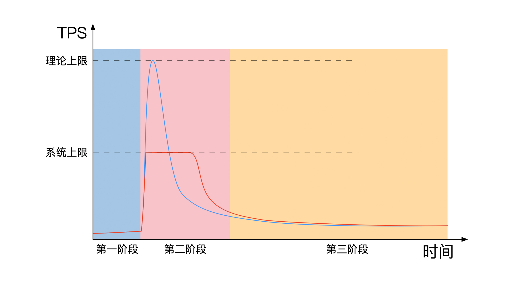
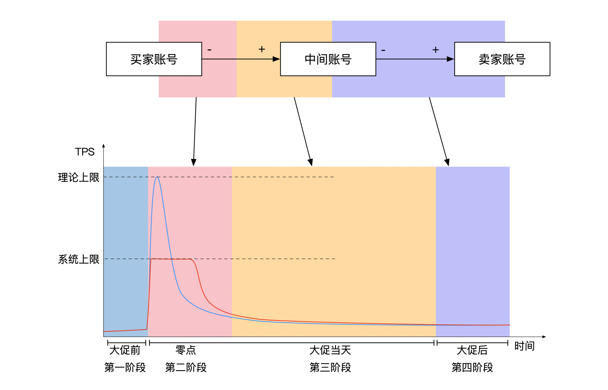
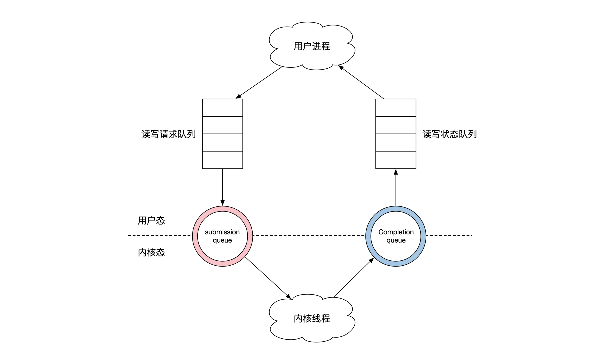
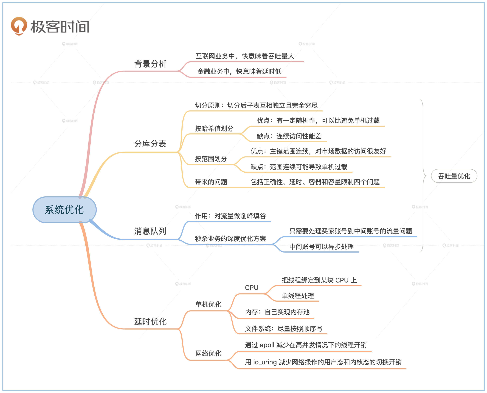

- 00 开篇词 如何成为金融级人才？.md.html
- 01 业务初探：扫了二维码之后发生了什么？.md.html
- 02 原理解读：如何理解第三方支付的业务逻辑和系统组件？.md.html
- 03 产品大观：不同金融业务都有哪些技术实现要点？.md.html
- 04 领域驱动设计（上）：如何设计金融软件顶层架构？.md.html
- 05 领域驱动设计（下）：如何设计统一的金融业务模型？.md.html
- 06 计算输入的正确性：怎么选择正确时间的数据？.md.html
- 07 计算过程的正确性：如何设计正确的数据处理架构？.md.html
- 08 计算结果的正确性：怎么保证计算结果是正确的？.md.html
- 09 数据传输的质量：金融业务对数据传输有什么要求？.md.html
- 10 数据存储的合理性：金融业务可以不用关系型数据库吗？.md.html
- 11 系统优化：如何让金融系统运行得更快？.md.html
- 12 正确性分级（上）：单机无备份有哪几种不同的一致性？.md.html
- 13 正确性分级（中）：多机无容灾有哪几种不同的一致性实现？.md.html
- 14 正确性分级（下）：多机有容灾有哪几种不同的一致性？.md.html
- 15 分布式正确性的存在性（上）：什么情况下不存在分布式共识算法？.md.html
- 16 分布式一致性（下）：怎么理解最简单的分布式一致性算法？.md.html
- 17 正确性案例（上）：如何实现分布式的事件溯源架构？.md.html
- 18 正确性案例（中）：常见分布式数据方案的设计原理是什么？.md.html
- 19 正确性案例（下）：如何在运行时进行数据系统的动态分库？.md.html
- 20 容灾（上）如何实现正确的跨机房实时容灾？.md.html
- 21 容灾（下）：如何通过混沌工程提高系统稳定性？.md.html
- 春节策划第1期 分布式金融系统知识，你掌握了多少？.md.html
- 春节策划第2期 读书如抽丝，为你推荐一些我读过的好书.md.html
- 春节策划第3期 如何运用架构知识解读春运买票和手游案例？.md.html
- 答疑集锦（一） 思考题解析与外汇架构知识拓展.md.html
- 答疑集锦（三） 思考题解析与数据库底层实现.md.html
- 答疑集锦（二） 思考题解析与账务系统优化.md.html
- 结束语 金融之道，与你同行，虽远尤欣.md.html
- 捐赠
11 系统优化：如何让金融系统运行得更快？
11 系统优化：如何让金融系统运行得更快？
你好，我是任杰。
这节课是我们第二个模块“系统正确性保障”的最后一节课。在第二个模块里，我们一起学习了如何正确地处理数据和计算，以及如何做好数据的传输和存储。
不过系统设计得再好，如果不能及时地完成业务处理也不行。所以，在最后一节课里我给你讲讲如何让金融系统运行得更快。
我们重点来看为什么不同业务有不同优化需求，以及常见的优化方式和问题有哪些。吃透了这些优化思路，不但能让你对金融系统的优化有一个系统性的认识，也方便你后续根据自己的需要有针对性地学习提高。
背景分析
“快”在不同的环境下有不同的定义。对于互联网业务来说，快一般意味着吞吐量大。对于金融业务来说，快意味着延时低。
那为什么会有这两种定义的区别呢？我们先来分析一下互联网业务。互联网业务在经济学上有一个特点是边际成本（Marginal Cost）基本为零。
边际成本决定了业务扩张的成本，所以既然扩张成本很低，那么互联网业务倾向于扩张，而且是大规模扩张。扩张的结果就是互联网业务会有大量的用户，这也决定了互联网业务需要解决的是大流量问题。
那流量大为什么和速度快扯上关系了呢？我说个实际例子你就清楚了。
不知道你有没有在网上秒杀过商品。秒杀的时候你会发现网页变得非常卡，半天显示不了内容。这时候你肯定会抱怨网站速度慢，这是因为在解决秒杀这种大流量问题的时候，互联网通常采用解决方案是用延时来换吞吐量，也就是通过降低你的网页加载速度来支持更多的人秒杀。
这时虽然吞吐量上去了，但延时也增加了。虽然所有人的体验都因此变得更差，但是至少大家还能买到东西，没有出现网站宕机这种更差的结果。所以互联网里的“快”，指的是服务器集群的处理能力快，能同时处理很多东西。
让我们回到金融业务，金融业务的边际成本一般都很高。金融机构在和机构用户进行对接前，双方都要做详细的客户身份识别（KYC，Know Your Customer）。对接之后就是业务、财务、合规、风控等一系列的流程。因为这些流程都有一定的时间和人力物力成本，所以机构类的金融业务很难像互联网一样大规模扩张。
既然机构类的金融业务无法大规模扩张，那么金融机构就无法靠规模优势来彼此竞争，只能靠质量优势来吸引客户。在金融行业里，时间就是金钱，所以金融机构就会想办法把速度提高，这样才能帮客户省钱。这也决定了金融行业的“快”指的就是延时低。
互联网业务和金融业务有一个重合点，那就是普惠金融，比如说第三方支付、小额信贷等等。普惠金融的业务特点更接近于互联网业务，所以对于快的要求也和互联网业务一样。
尽管金融业务多种多样，但我们把握住相应背景中“快”的本质定义，就能更合理地选择优化方向了。那么接下来，我们就从吞吐量和延时这两个方面，分别来看看金融系统的优化要点。
吞吐量优化
首先我们看看吞吐量优化的两种常见方法，分别是分库分表和使用消息队列。
分库分表
吞吐量最常见的解决方式就是分库分表。
分库分表指的是将数据库表做横向切割和纵向切割。单个数据库表容易受到单机硬件处理速度的限制，但是在拆封成为了多个部分之后，每个部分都可以放在不同的机器上处理，这样就能使用更多的硬件资源。所以分库分表之后，我们可以用大量的硬件来应对大流量的问题。
我们在切分的时候需要注意一个原则，那就是切分完的子表需要互相独立，但是也要完全穷尽（MECE，Mutually Exclusive Collectively Exhaustive）。互相独立指的是子表之间不要有任何内容的重复。完全穷尽指的是把原始的表切割完之后不要有任何数据丢失。简单来说，在切分表的时候，你要保证切分后的结果不多不少。
按哈希值和主键切分
了解了切分的原则之后，具体应该怎么切分呢？我们来看看最常见的水平切分，水平切分的时候会按照数据库的主键来切分。切分的方法一般有两种，一种是按主键的哈希（Hash）值来分，另一种是按主键的范围（Range）来分。
如果按哈希值来分，你需要注意哈希函数的值域大小。一般来说我们会把每个哈希值对应的数据都放在一台机器上。因为机器数量有限，所以哈希函数的值域一般不大，比如10或者100。
按哈希值切分有一个很大的优点是有一定的随机性。用户的访问并不一定很随机，有可能出现某些主键范围的访问量特别集中的情况。由于哈希值会将原来的值打散，所以有可能将流量分散在不同的机器上，这样就会避免单台机器过载。
不过哈希值的随机性也带来了一个缺点，那就是连续访问性能差，不过互联网应用很少看到需要主键连续访问的情况。
但是在金融行业有一类数据叫市场数据，比如说股票和期货的实时交易价格信息。这类数据的特点是，在使用的时候一般会访问一个时间段内所有数据，因此在时间上需要连续访问。那么对于这类数据，按照时间的哈希值来切分就不太适合使用场景。
按范围切分
这里我还要简单介绍一下按范围划分的方法，它比较简单。它的优点是主键的范围连续，对于市场数据的访问很友好。
但是，范围连续的优点也会成为缺点。范围连续可能会导致访问过于集中，这样有可能造成单机过载。比如说在进行量化分析的时候，可能会大量访问最近几分钟的市场数据，按照范围划分会导致存有最近数据的服务器被大量访问。
分库分表带来的问题
分库分表将原来在一台机器上处理的事情，变成了在多台机器上处理。无论你是按照哪种切分方法，都会带来多机环境下的一些问题。
第一个问题是正确性。分库分表之后，大家可以同时更改多个表的内容。由于这些表在不同的机器上，网络通讯需要一定的时间，你很难确定别的机器上的内容是正确的。就算你验证了是正确的，在网络消息传回来的那段时间也可能会发生变化。因此分库分表之后，你需要一定的分布式正确性保障，也就是需要分布式事务。
第二个问题是延时。分布式事务需要至少两次网络沟通，这也决定了分库分表方案的最低延时。对于个人用户来说，网络延时带来的问题不大，但是对于高频交易相关的机构来说会延时过高。
第三个问题是容灾。机器不可能一直在线，一定会出问题，只是时间早晚的问题。如果你学过概率论就会更理解这点，机器数目越多，出问题的概率越高，所以分库分表的情况下一定需要考虑集群的容灾。
第四个问题是容量限制。分库分表的过程一旦完成就很难再调整分库的数量。因此有经验的架构师在最开始会做一些看起来“超前”的准备。比如说如果分10个库就够了的情况下，可能你会分为20个或者50个。但是互联网应用的增长速度谁都说不准，很有可能会突然爆发增长，这时候依然会出现集群整体容量不足的情况。
在课程的第三模块，我还会给你详细讲解分布式正确性、容灾，以及动态分库分表的方法，这里你先掌握分库分表会带来哪些问题就可以了。
消息队列
吞吐量的另一种优化方式是从消息队列下手，消息队列的核心思想是将流量先写入到消息队列中，然后服务器按照固定的速度处理消息队列内的消息。这样就算是峰值流量进来了，也不会造成服务器过载。
消息系统是很常见的一种处理峰值流量的架构，在这里我也给你举个具体例子。
电商公司在重大节日会举行秒杀抢购的活动。秒杀会生成大量的支付订单，因此会对支付系统产生极大的压力。我们来看看这种压力有什么规律。
秒杀一般分为三个阶段。第一个阶段是准备期，这时候支付系统的流量和平常一样，不需要有特殊的准备。
第二阶段是秒杀开始之后的几分钟。这时候从系统监控上可以看到一个很高的流量峰值。这个峰值是电商系统丢给支付系统的流量，代表了理论上最高的并发量。
支付系统的流量并不会直接处理，而是会写入到消息队列中。消息队列也有一个消息写入速度的上限，但是这个上限非常高，通常不会成为瓶颈。
支付系统会尽最大能力从消息系统中拉取要处理的消息。这个处理的速度是有上限的，一般是分库分表后所有机器的处理能力。和消息系统不同的是，支付系统的处理速度会低于电商系统丢过来的峰值流量。所以你能看到的是，电商系统丢过来的流量很高，但是时间很短。支付系统处理的速度慢，时间也长。
第三阶段是秒杀结束之后。这时候系统流量会慢慢恢复到秒杀开始之前的情况，一切回归正常。
下面这幅图给你展示了简化版的秒杀三个阶段。中间第二阶段，我们一般形象地比喻成削峰填谷：

那除了削峰填谷，还可不可以继续优化呢？当然是可以的，不过要结合业务。虽然你是在零点秒杀，但是货品需要过一段时间才能送到你手上。等你确认收货之后，商家才能收到你的钱。所以从你付钱到商家收钱中间有很长一段时间，这就给了我们进一步优化的空间。
在秒杀的时候，钱不是从买家账号直接打到卖家账号，而是先打到中间账号，也叫作担保账号。所以我们在处理秒杀的时候，只需要处理买家账号到中间账号的流量问题。
买家账号到中间账号还可以进一步切分。我们在学关系型数据库事务的时候，常常提到转账的例子，转账要求两个账号需要同时都变，或者都不变，这就是事务性要求。
可是我们从支付系统角度来看，只要买家账号能正确扣款就行，中间账号稍微延迟一点打款完全没问题。其实再进一步分析，中间账号的打款就算丢了也问题不大。支付系统在每天晚上日切的时候进行所有账户的对账。如果中间账号的打款丢了的话，会通过补账的方式把钱再补回来。
这就意味着中间账号可以异步处理，所以一种可能的优化方法是这样的。
首先，在秒杀开始的时候，也就是在秒杀的第二阶段，支付系统只处理买家账号，将对中间账号的处理暂时搁置下来，这样就能减少一半的账号操作。到了第三阶段，也就是促销结束后，再慢慢恢复对中间账号的处理。
这时候系统多了第四阶段，也就是快递送货之后打款给卖家的阶段。示意图如下：

延时优化
吞吐量优化是系统能力的横向扩展，是宏观资源的调配。而延时是系统能力的纵向扩展，是微观资源的调配，因此需要不同的解决方案。
因为不同的编程语言、操作系统和硬件情况都会有独特的优化手段，介绍起来可能是挂一漏万，所以为了让你理清思路，我选择了相对更常见的单机优化和网络优化。
单机优化
提高单机性能有一个反直觉的解决方案是单线程处理。我们在第7节课讲事件溯源架构的时候提到过单线程的自动机。在第10节课也讲过单线程的列数据库。那你有没有想过，为什么单线程可以有这样高的处理速度呢？
我们谈到多线程优势的时候，常常会提到可以用到计算机的多个CPU或者多个核，因此有更多的计算资源，因此可以处理更多的事情。这话听起来很有道理，但是这里有个假设是计算之间不会抢占资源。
事实上，在多线程处理的时候，计算机的操作系统会进行线程调度。线程调度需要更新操作系统内的核心数据结构，以及更新CPU上的各种缓存，这个过程也需要消耗时间。所以虽然多线程能用到更多的资源，但是准备资源本身就会消耗资源。
这就是为什么单线程可以比多线程更快的原因。当然了，这只是一种可能性，为了能真正超过多线程，你还是需要做一些处理的。
首先你可以把你的线程绑定到某块CPU上。比如在Linux操作系统有一个C函数叫 sched_setaffinity，它可以把你的程序绑定到指定的CPU上。
需要注意的是，默认情况下绑定到CPU指的是你的程序只会在这块CPU上运行，不会跑到其他的CPU。尽管其他程序还是可能会过来抢你的这块CPU，但是你的程序绑定到CPU之后，还是会运行得更快。
绑定CPU还有一些优化空间。Linux内核启动时有个 isolcpus 的启动选项。这个选项可以将一块CPU独立出来，这样任何程序都不可以使用这块CPU了。唯一可以使用这块CPU的方式是你将进程绑定到这块CPU，这样你就能真正独占这块CPU了。
CPU处理好之后，我们就要说到内存了。当你访问内存的时候需要注意的是，CPU并不是直接访问内存，而是通过CPU缓存来访问的。
机器在加载缓存时会一次性加载一小段内存，这也决定了内存的顺序访问会比乱序访问的速度更快。在进行金融风险计算的时候会用到多维数组，这时候需要根据算法访问的顺序来合理组织数组的位置。
内存另一个需要注意的是C语言分配内存需要一定时间，而且这个时间长度还是随机的。所以如果你的程序需要频繁分配内存，或者对延时非常敏感，最好自己实现内存池。
最后就是文件系统了。我们在第7节课里提到过，事件溯源由于是顺序写文件，可以达到非常高的写入速度，所以如果你的程序也能顺序写文件的话，尽量按照顺序写。
如果一定需要随机写，Linux也有一个能帮助你的函数叫 mmap 。mmap 会将文件映射到进程的内存页表上。这样在C程序里就能像访问内存一样访问文件。这就减少了用户进程和操作系统之间来回拷贝数据的开销，节省一部分时间。
网络优化
一台机器的各个组成部分相对来说还是比较稳定的，所以单机优化都有一些可以复用的优化手段。而网络则是非常不确定的一个环境，优化的手段需要结合实际情况来看。在这里我们重点看看Linux上比较有用的几个函数，它们可以解决网络消息处理的问题。
在本世纪初有个问题叫C10K，指的是有没有可能让一台机器支撑一万个并发。用进程或者线程的方法是万万达不到的，所以就需要 epoll 上场了。
epoll 是Linux独有的一个函数，它可以同时监听大量的网络链接。当网络链接变得可以读写的时候，它会通知你的程序。这样你就不需要同时等待所有的网络链接，只需要等待这个函数的通知就行。另外，epoll还做了内核数据结构上的优化，就算网络链接特别多的时候也能高效地工作。
但 epoll 还是有一个问题。它只能告诉你网络是否可以读写，你还是需要自己写代码来读写网络。由于每次读写网络都会调用内核的函数，这样会造成大量的用户态和内核态切换，浪费很多计算资源。那有没有办法解决这个问题呢？
在2018年Linux内核新增了一个功能叫作 io_uring，它就解决了用户态切换过多的问题。
它解决问题的思路很简单。你在写程序的时候准备一个队列，里面记录了所有你想要做的读写操作，同时也包含了你预先分配的读写内存。
接着你将这个队列一股脑交给内核。内核会先做 epoll 的事情，检查哪些网络链接可以开始读写。然后内核会多做一步，帮你处理网络数据。
如果你的操作是写网络的话，会把你内存的数据写出去。如果你的操作是读操作的话，会把数据读到你预先分配的内存。内核操作完之后会把这些操作的状态记录在另一个列表里，返回给你的用户态进程。示意图如下：
-
你会发现，从架构上来说，io_uring 替你把 epoll 和之后的读写操作在内核态批量处理，同时用户进程和内核共享数据页表，这样既节省了状态切换开销，也节省了数据拷贝开销。
目前有一些网络操作频繁的应用正在实验这种新技术。不过相对于已经存在近10年的 epoll 来说，io_uring 从文档和工具上来说都还不太成熟，所以你要做好挑战的准备。
小结
在这节课里我们学习了如何优化金融系统。
首先我们分析了为什么金融系统会有吞吐量和延时这两个优化的方向。普惠金融和互联网业务类似，面向大众，对系统吞吐量要求非常高。机构金融专业性特别强，对延时要求非常高。
接下来我们了解了吞吐量优化的两种常见方法，分别是分库分表和使用消息队列。分库分表有按哈希值和范围这两种不同的划分方式。这两种划分方式都有各自的优缺点，但是它们都有正确性、延时、容灾和容量限制这四个问题。我会在第三个模块讲解应该如何解决这些问题。
消息队列的作用是对流量做削峰填谷。我们用秒杀场景下的支付系统为例，讲解了在碰到问题时应该如何分析业务规律，应该如何利用业务规律的特点来优化系统架构。
最后我们讲了延时优化的一些常见方法。延时优化要从单机优化开始，优化对CPU、内存和文件这些资源使用。网络优化主要是通过 epoll 来减少在高并发情况下的线程开销，同时用io_uring来进一步减少网络操作的用户态和内核态的切换开销。
通过这节课，我希望你还能了解金融业务的多样性所带来的金融系统架构的多样性。
普惠金融的架构是从宏观层面解决架构的横向扩张问题，是互联网云计算的标准使用场景。机构金融是从微观层面解决架构的纵向扩张问题，需要对用户进程、操作系统和硬件做特别的优化和控制，因此非常不适合云计算的解决方案。知道这些区别之后，你还要根据具体业务进行相应的优化和选择。

思考题
支付系统会有一些超级大账户。这些账户的交易极其活跃，不在秒杀的情况下也会有很高的流量，那秒杀的时候系统压力就更大了。比如说一些卖低价体育类用品的网店，或者收水电煤气费用的公司，都有这些行为特征。那对于这些超大流量的账户，你应该怎么应对呢？
欢迎你在留言区分享你的思考和疑问，如果这节课对你有帮助的话，也欢迎转发给你的同事、朋友，一起讨论金融系统优化的问题。
© 2019 - 2023 Liangliang Lee. Powered by gin and hexo-theme-book.